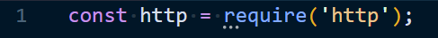
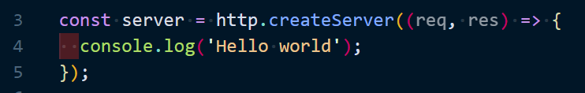

#NODE JS|
September 3th, 2020
There is a huge number of technologies that are used to build web servers and REST APIs to power and manage websites and web applications on the backend. In this article we will take a look at one of these modern technologies called Node JS and we will see what is it and how it works.
1 - what is node JS ?
Node JS is a JavaScript runtime environement that executes JavaScript on the web server or even directly on a computer, which means that we can use JavaScript as a server-side language just like other programming language like PHP, Python or Java. In order to understand how Node JS Works, let's first understand how computer works and how they understand code.
Computers can only understand machine code ( also known as binary code ), but this code is really complex to write and read for us as human. so something called assembly language is built on top of this machine code, which is a litle bit easier to read and write, but this assembly language is still complex to read and write, that's why we have programmig languages like c++ built on top of this assembly language.
So, we can write C++ code on computer which is a much esier than assembly code, so the computer will understand it because it's compiled down to machine code.
JavaScript is a progrmming language which abstracted even more away from machine code than C++ to make programming easier. But computer can not directly understand JavaScript or compiles it down to machine code, so we can not directly run JavaScript on a computer, but it can run inside a web browser such as Google Chrome, Firefox or Safari, but how does That work ?
Inside each web browser there is a JavaScript engine That is written in C++ for example Google Chrome has V8 engine and Firefox has Spider Monkey. This JavaScript engine compiles JavaScript code into machine code at a runtime, so by passing JavaScript code through this this V8 engine in the browser the computer can then understand JavaScript, however it can not run JavaScript outside the browser, because there is no V8 engine compiles it down to machine code outside the browser. And here is where Node JS come into play.
Node JS is a software ( program ) also written into C++ and wraps the V8 engine, which means that the V8 engine that lives inside the web browser also lives inside Node JS. Because Node JS is written in C++ it can run directly in our computer, which means by installing and runnig Node JS on our computer, it can take our JavaScript code and run it through the V8 engine that it has inside it and compiles it into machine that computer can understand.
So now, using Node JS we can run JavaScript code directly on a computer or a server, but this is not just the only thing that Node JS can do. Node JS has other additional features such as read and write files on a computer using fs module ( Node Core Module ), connect to a database using Moongose ( 3rd Party Package ), act as a server for a content using http module ( Node Core Module ) or Express ( 3rd Party Package ). Basically with Node JS you can do anything that other programming languages can do.
2 - what does Node JS do on a website ?
The role of Node JS on a website or web application is basically to run JavaScript code on the backend. this JavaScript code might be handling requests that comes from the web browser, communicate with files on the server, intaracting with a database or sending responses back to the web browser. A server response could be an HTML page with dynamic data embedded inside it, maybe some CSS files or images.
3 - why use node JS and not other technologies ?
Node JS is extremly fast, efficient and highly scalable, that's why is a good choice if you want to build the backend of a website or web application, it also has a feature of non-blocking code, and the most important is that Node JS give us the ability to use the same language ( JavaScript ) that is used to build the frontend, so you can use only one programming language to build a full stack website or web application.
Another reason of choosing Node JS is that it has a massive community behind it, there is always help if you need it or if you stuck on a problem. And there is also a huge amount of 3rd party packages that allow you to add functionalities to your web application without having to reinvent the wheel.
4 - what should you have ?
Computer
Operating System
Text Editor
Web Browser
5 - what should you know first ?
JavaScript Building Blocks :
Data Types
Variables
Arrays
Objects
Conditionals
Loops
Functions
ES6 :
JSON :
HTTP Methods :
GET
POST
PUT
DELETE
6 - Node JS Core Modules
Node JS has a large set of core modules that it comes with and the most used modules are fs, path, http and os.
7 - Node Package Manager (NPM)
When you intall Node JS you get something called NPM which stands for Node Package Manager, this tool is used to install 3rd Party Packages or modules such as frameworks or libraries. These packages get stored in a folder that will be created automatically called node_modules. Each package that you install from NPM will get listed in a file called package.json which every Node JS project should include, this file holds information about your application like the name, the version and also a list of all dependencies that your application needs to run.
8 - Node Custom Modules
In Node JS you can also create your own modules which are simply files that have an export, this way you can export variables, functions, classes or anything else from one file and have access to them in another file using the require keyword.
9 - create a web server using Node JS
After we've covered what is Node and the basics of how it works on a computer. Now it's time to build a web server that will power the backend of our website using Node JS and JavaScript, but before that let's first understand the process of communication between a web browser and a web server.
When we type a website address or a domain name into a web browser, the browser send a request to the web server that's powering that particular website. When the web server recieve a request it decides what to do and what functions to perform based on that request, it may communicate to an external API or interact with a database, and then send back a response to the web browser in most cases that will be an HTML page, CSS files, images or JSON data.
Now we know how a web browser communicate with a web server, but how does the browser know to send a request to the correct web server, to answer this question we need to know a litle bit about IP adrresses, domain name system ( DNS ) and HTTP.
An IP Addresses are like addresses for computers, each computer connected to the internet has a unique IP address that identify it, when we create a website we need to host it on a special computer ( known as a host ). If we want to connect a server on that host computer we need to know its IP address.
IP addresses are just series of numbers and it's hard to remember them that's why we use domain names to mask these IP addresses. And then when we type a domain name into a web browser it will communicate with a DNS ( stands for Domain Name System ) to find the IP address that associted with the specified domain name. Then the browser use that IP address to find the computer that host the website and communicate with it. This way the web browser can send requests to this computer and get back responses from it.
This communication between the client and the server is done via HTTP stands for HyperText Transfer Protocol and has four important methods that a web browser use to communicate with a web server.
creating a web server :
In Node JS we manually write code to create a server which lives on the backend of our website, listen for requests coming in from the browser, perform some functions based on these request and then send back responses to the browser. This totally different from a language like PHP where we don't have to create the server manually because we have other tools manage that for us like apache
In the rest of this article we will focus on how to create a local server on our computer using Node JS, which can then be used to actively listen for browser requests and respond to them.
Now let's write some code
1 - Open Your Text Editor ( Visual Studio Code )
2 - Create a folder called it app
3 - inside the app folder Create a file called it server.js
The server.js file is where we are going to create the server
4 - inside the server.js file we need to require a core node module : http module

now we can use this http module to create a server
This createServer() method take a callback function as an argument, this call back function will run every time a request comes to the server and it has access to two different objects ( req and res ). The request object contains information about the request, the response object is the object that we use to send a response to the browser.

After we create our web server now we need to invoke the listen() method, this method accept three argument, the first argument is the port number which is in our case 3000, the second argument take 'localhost' as a default parameter and the third argument is a callback function that will fire when we start listening.
localhost : is like a domain name that we use on the web, but this one takes us to a very specific IP address (127.0.0.1) that point to our computer, that means when we are connecting to the localhost domain in a browser, the browser is actually connecting back to our own computer which is the act as a host for our website
port numbers : are like 'doors' into a computer through which internet communications can be made to different programs
So now, we have created a web server and we are listening to port 3000 on the localhost. The only thing that we need to do, is to run the server.js file through node by typing the command bellow on the terminal and then we can start sending request to this server.
Open The Terminal and Type This Command :
In the previous section we see that the createServer() accept a callback function that has access to the request and the response objects. In this section we will see how we can use this response object to send back a respone to the browser.
- The 1st step that we should in order to send a response back to the browser is to set the response headers using steHeader() function. Response headers give the browser some information about what kind of response is coming back to it for example type of data we sending back, is it text, HTML page, CSS files, images or JSON data, we can also use the response headers to set cookies on the browser.
- The 2nd step is to write whatever content we want to send back to the browser using write() method.
- The 3rd step is to end the response end() method which then sends it to the browser.
Now, if we run our server and we go back to the browser and make a request to the localhost on port 3000 using the URL : " localhost:3000 " , we will get a response back from the server and this response is just a simple text 'Hello World' that will be printed on the browser screen.
If we want to send back some HTML instead of plain text, we have to change the value of the Content-Type property to 'text/html' and then pass our HTML to the write() method and then end the response using the end() method.
Now, let's see how we can send static files like HTML pages, CSS files or JavaScript files to the browser
Fisrt we need to create a folder called views inside our app folder and then we create an index.html file that we want to send to the browser inside our views folder
and the we write some code into our HTML file :
Now, in order to send this HTML file to the browser whenever a user make a request for it we need firt to read this file using the readFile() method of the core Node JS module fs, and then send the data from that file as a response to the browser.
But first we need to require the Node core module (fs) on top of our server.js file.
Now, if we run our server and send a request from the browser to the server we should get back that HTML file as a response.
basic routing
Routing give us the ability to send a different data or different HTML pages depending on the route that a user visit, so we need a way to figure out the URL that a user request and depending on that URL the server send back a different data.
status code
Status codes describe the type of response being sent to the browser, there is many different status codes and the most common ones are :
200 : Means that everything is OK.
301 : The resource was removed permanently to somewhere else.
404 : Page or file is not found.
500 : Internal server errors.